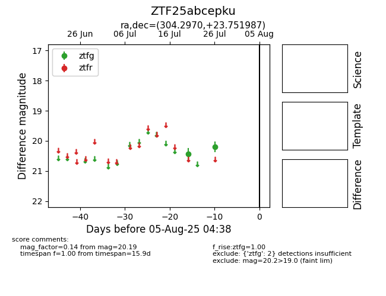

Target ZTF25abcepku at 2025-08-05 04:38, see:
FINK: fink-portal.org/ZTF25abcepku
Lasair: lasair-ztf.lsst.ac.uk/objects/ZTF25abcepku
ALeRCE: alerce.online/object/ZTF25abcepku
alt names
ZTF25abcepku (ztf,fink)
coordinates:
equatorial (ra, dec) = (304.2970,+23.75199)
galactic (l, b) = (63.8870,-6.54979)
photometry
last ztfg=20.19
2 ztfg detections
